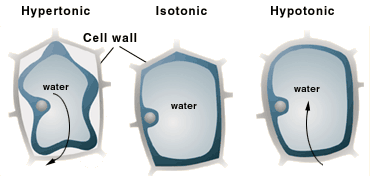
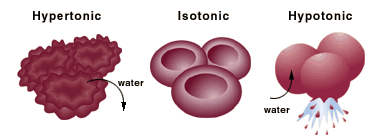

The Biology Project > Cell Biology > Cell Membranes > Problem Set
Cell Membranes Problem Set
Problem 9: Water flow solution
Tutorial to help answer the question
The system used by protozoa to help control the flow of water into the cell is:
A. tugor pressure against the cell wall. B. a pump in the cytoplasm that squeezes out water. C. the Na+ K+ ATPase of the cell membrane. D. the lysosome, used to secrete water in animal cells.
Tutorial
Mechanisms for dealing with water problem
There are three general mechanisms for dealing with the water problem. For most cells, the concentration of solutes is higher inside the cell than in the aqueous external environment.
|
Plant cells
|
|
|  | Plants solve the water problem by having a rigid cell wall. The entering water is placed inside a large vesicle. The wall protects the cell against expansion, and the resulting pressure makes the plant rigid, a phenomena called tugor pressure. |
|
Animal cells |
|
|  | Animal cells lack a wall, and use active transport systems (especially the Na+K+ATPase that moves three Na+ out for each two K+ that move in) to move ions outside the cell, reducing the osmotic pressure. |
|
Contractile mechanism Most protozoa use a special contractile mechanism. Water collects in a vesicle, and microfilaments force a contraction that squeezes water back outside the cell. This pump mechanism protects the cell from osmotic pressure. |
|
The Biology Project > Cell Biology > Cell Membranes > Problem Set
Department of Biochemistry and Molecular Biophysics
University of Arizona
May 2002
Revised: August 2004
Contact the Development Team
http://biology.arizona.edu
All contents copyright © 2002-04. All rights reserved.